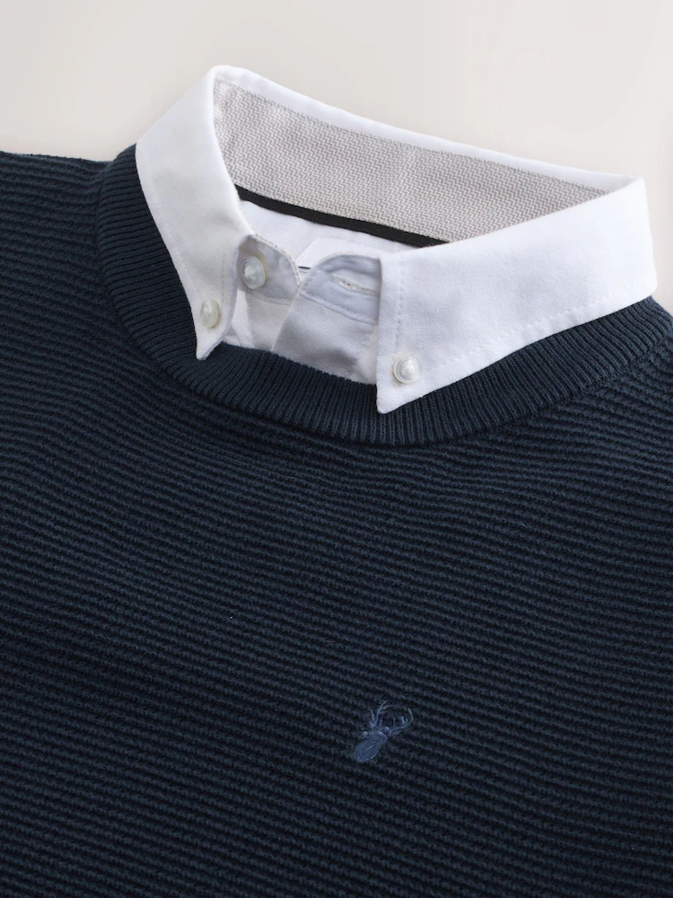

Next Navy Blue Textured Oxford Mock Shirt Jumper
Cotton-rich crew neck with a mock Oxford shirt collar — the layered look without the bulk. Smart-casual made effortless.

"For days where you don't want to wear a shirt but still look smart."— My review
Why it made the list
Layering a shirt under a jumper is a classic move, but getting it right — collar sitting flat, no bunching at the waist, the right balance of casual and smart — takes more effort than it should. This jumper from Next skips all of that by building the Oxford shirt collar directly into the crew neck. You get the polished, layered look with zero fuss.
At £30, the quality is genuinely surprising. The cotton-rich fabric has a textured knit that looks more expensive than it is, and the mock shirt collar with its white Oxford detail is convincing enough that you'd never know it wasn't a real shirt underneath. It's the kind of piece that earns compliments in the office without trying.
Key details
| Fit | Regular fit, crew neck |
| Material | 86% Cotton, 14% Nylon |
| Collar | 100% Cotton mock Oxford shirt detail |
| Colour | Navy Blue |
| Care | Machine washable |
| Style | Textured knit with ribbed trims |
What we liked and didn't
Pros
- Layered look with none of the layering hassle
- Cotton-rich fabric feels comfortable all day
- Textured knit looks more premium than £30
- Mock collar sits neatly — no adjusting needed
- Machine washable, easy to care for
Cons
- Only available in limited colourways
- Runs slightly warm for summer months
- Mock collar won't work with very open-neck styles
Who it's for
Anyone who wants to look put-together without actually layering separate pieces. It's ideal for office days where you want to look smart but stay comfortable, weekend lunches where a plain jumper feels too casual, or any situation where you'd normally reach for a shirt-and-jumper combo but can't be bothered with the fuss. At £30, it's an easy buy to have on standby in your wardrobe.
The verdict
For £30 you're getting a genuinely clever piece of knitwear. The mock shirt detail is well executed, the fit is clean, and the cotton-rich fabric feels good against the skin. It's one of those rare high-street finds where the quality quietly punches above the price tag.